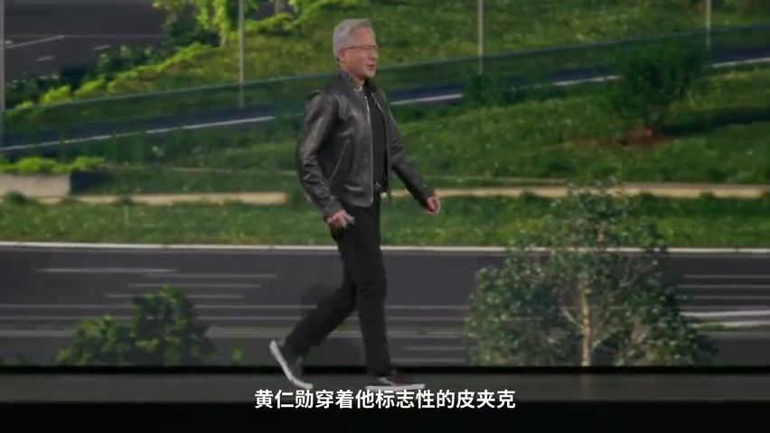
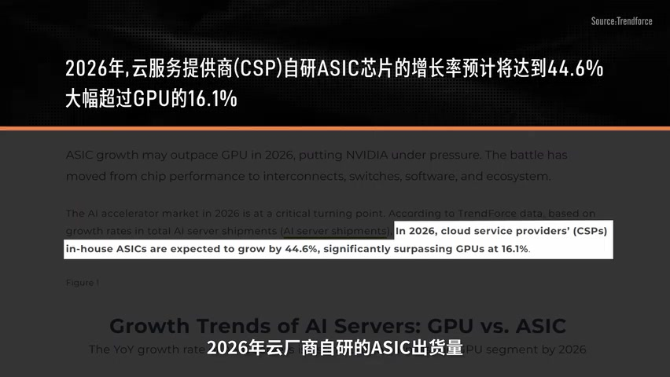
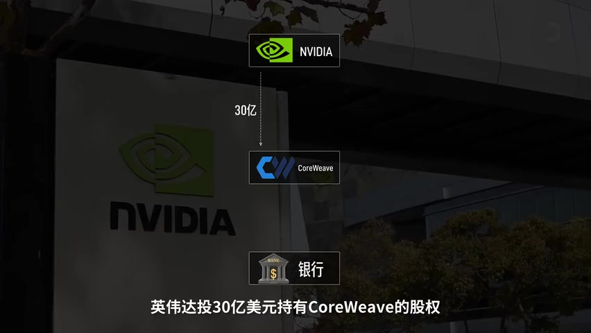
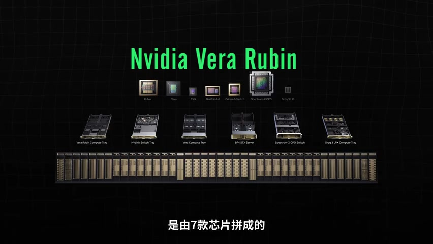
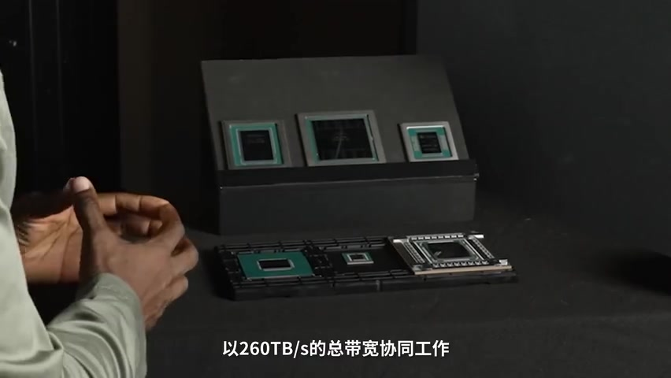
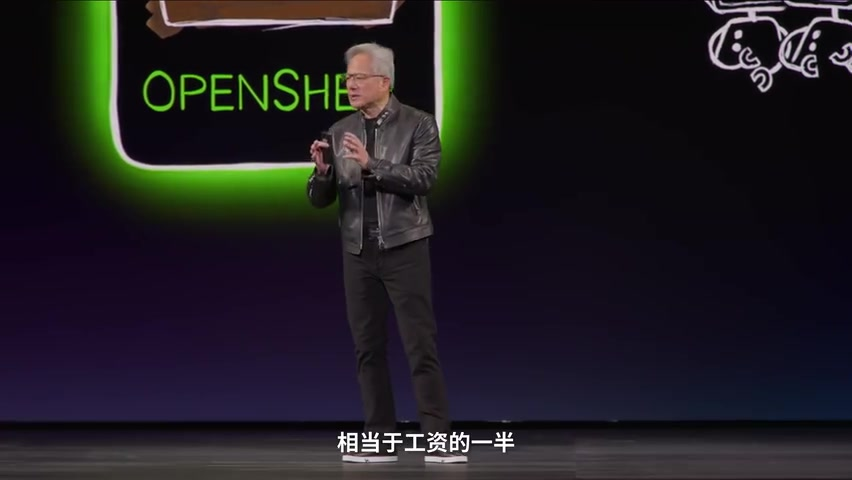

01
中文
在来自190个国家3万人的注视下，黄仁勋穿着他标志性的皮夹克走上了舞台。
EN
Under the gaze of 30,000 people from 190 countries, Jensen Huang walked on stage in his signature leather jacket.
表达提示under the gaze of（在…注视下）；his signature leather jacket（标志性皮夹克）

Scene English · 科技分析 · 英伟达GTC 2026
Chips Are No Longer Scarce — So Why Still NVIDIA? Breaking Down Jensen Huang's GTC 2026 Hand
🎧 语音讲解
Opening: Jensen's Moment of Anxiety
情境GTC 2026开幕，3万人的注视下黄仁勋走上「AI界春晚」的舞台，宣布2026年订单金额。当所有人以为要坦白增长放缓时，他甩出一句「给他装到了」，股价跳涨3%又回落——大家似乎并不买账。语域：财经口播，悬念开场。
在来自190个国家3万人的注视下，黄仁勋穿着他标志性的皮夹克走上了舞台。
Under the gaze of 30,000 people from 190 countries, Jensen Huang walked on stage in his signature leather jacket.
表达提示under the gaze of（在…注视下）；his signature leather jacket（标志性皮夹克）
首富全世界最赚钱的生意，但整个市场看他的眼神，已经从膜拜变成了审视。
He runs the world's most profitable business, yet the market now looks at him with scrutiny instead of worship.
表达提示with scrutiny（审视）；instead of worship（而非膜拜）
为什么英伟达一边赚钱一边焦虑？
Why is NVIDIA making money and worrying at the same time?
表达提示make money and worry（一边赚钱一边焦虑）
AI界春晚 → the Oscars of AI / the Super Bowl of AI
从膜拜变审视 → from worship to scrutiny / idolize turned to inspect

The Training Era: NVIDIA's Comfort Zone
情境过去几年AI行业的资源都集中在训练大模型——训练就是让AI读书，把互联网几乎所有的文字图片代码喂给神经网络。这个过程算力几乎无上限，模型越大越聪明，GPU堆得越多越好，这是英伟达的绝对舒适区。语域：财经口播，概念讲解。
训练就是让A.I.读书，把互联网上几乎所有的文字图片代码喂给一个神经网络。
Training means teaching AI to read — feeding nearly all the internet's text, images, and code into a neural network.
表达提示feed into a neural network（喂给神经网络）
模型越大越聪明，数据越多越精确，GPU堆得越多越好。
Bigger models are smarter, more data means more accuracy, and more GPUs is always better.
表达提示bigger models are smarter（模型越大越聪明）
训练时代是英伟达一家独大，没有任何人能在这个战场上正面击败它。
In the training era, NVIDIA stood alone — nobody could beat it head-on in this arena.
表达提示stand alone（一家独大）；beat it head-on（正面击败）
绝对舒适区 → its absolute comfort zone / completely in its wheelhouse
正面击败 → beat it head-on / defeat it directly

The Inference Era: The Rules Have Changed
情境2025年起，人类所有语料被训练完了，scaling law正在放缓。而推理（AI每天回答问题的过程）成为主力，预计占所有AI工作负载的三分之二。推理时代比的是每次接诊能不能再便宜一角钱——GPU像全科医生什么病都能看但出诊费太贵，专用芯片像专科诊所又快又省。语域：财经口播，比喻精妙。
训练等于一个医学生读了10年书，而推理等于这个医生坐在医院问诊，看了一个又一个病人。
Training is a med student studying for ten years; inference is that doctor seeing patients one after another.
表达提示inference（推理）；see patients（问诊）
推理时代比的是每次接诊能不能再便宜一角钱。
In the inference era, the game is whether each patient visit can be a cent cheaper.
表达提示a cent cheaper（便宜一角钱）
GPU就像全科医生，什么病都能看，但用来每天开几十亿次感冒药，出诊费太贵了。
The GPU is a general practitioner who can treat anything — but for prescribing billions of cold pills a day, the fee is too high.
表达提示a general practitioner（全科医生）；prescribing cold pills（开感冒药）
scaling law放缓 → scaling laws are fading / the scaling law is slowing
又快又省 → fast and cheap / quick and cost-effective
Internal Revolt: Customers Want to DIY
情境商业世界最大的悲哀不只是对手比你强，而是你的客户开始想自己干了。谷歌TPU第七代与英伟达Blackwell不相上下、亚马逊建最大数据中心、微软Maia芯片、OpenAI也要自研。这些自研芯片出货增速远超GPU——像你开了一家最专线的饭店，最大的老板客户说要在自己后院建厨房。语域：财经口播，金句频出。
商业世界最大的悲哀不只是对手比你强，而是你的客户开始想自己干了。
The saddest thing in business isn't just a stronger rival — it's when your customers start doing it themselves.
表达提示a stronger rival（更强的对手）；start doing it themselves（想自己干）
谷歌的TPU已经更新到第七代，硅谷顶级智库评价与英伟达Blackwell不相上下。
Google's TPU is now on its seventh generation, and top Silicon Valley think tanks rate it on par with NVIDIA's Blackwell.
表达提示on par with（不相上下）
这好比你开了一家全宇宙最专线的饭店，结果你最大的几个老板客户说要在自己后院建厨房了。
It's like running the most exclusive restaurant in the universe — and your biggest clients announce they'll build a kitchen in their own backyard.
表达提示the most exclusive restaurant（最专线的饭店）；their own backyard（自家后院）
客户想自己干 → customers want to DIY / clients go in-house
不相上下 → on par with / comparable to

External Threat: AMD's Value Axe
情境死咬不放的AMD是外患：不打算在性能上硬刚，目标是英伟达的利润率。MI455X算力是英伟达80%、内存1.5倍、互联带宽持平，主打够用且极度便宜，从Meta手里切走百亿美元级GPU订单。AMD还用UALink开放互联标准，逼老黄降价。语域：财经口播，竞争分析。
苏姿丰没打算在性能网络上跟老黄硬刚，他的目标是英伟达的利润率。
Lisa Su isn't trying to outgun Huang on raw performance — her target is NVIDIA's profit margins.
表达提示outgun（火力压制）；profit margins（利润率）
我不需要全方位碾压你，我只主打一个够用而且极度便宜。
I don't need to crush you across the board — I just sell good-enough and dirt cheap.
表达提示crush you across the board（全方位碾压）；dirt cheap（极度便宜）
AMD的存在就是在逼着老黄降价，蚕食英伟达傲视群雄的超高毛利率。
AMD's very existence forces Huang to cut prices, eroding NVIDIA's sky-high gross margins.
表达提示sky-high gross margins（超高毛利率）；erode（蚕食）
性价比屠刀 → the value axe / the price-performance knife
逼着降价 → force a price cut / push margins down

The Core Risk: Circular Financing and Bubble Doubts
情境英伟达年营收2159亿美元印钞速度让苹果沉默，但这些钱来自巨头6000亿美元的资本开支，而巨头靠AI赚回的钱连利息都添不上。老黄开始亲自下场造需求——Circular Financial Deal循环融资：投资CoreWeave持有股权，CoreWeave再抵押GPU借钱继续买GPU。真正的风险是GPU抵押债务的信贷链条，一旦AI需求增速放缓，二手GPU洪流会冲垮定价权。语域：财经口播，风险剖析。
训练GPT3要花几百万美元值得，训练GPT4花了上亿也值得，但再往上堆可能十亿几十亿，换来的智能提升却越来越小。
Training GPT-3 cost millions and was worth it; GPT-4 cost hundreds of millions and was still worth it — but scaling further could cost billions for ever-smaller intelligence gains.
表达提示ever-smaller gains（越来越小的收益）；worth it（值得）
漂亮话翻译叫循环融资，丑话翻译叫自己给自己下单。
The polite term is circular financing; the blunt term is placing orders with yourself.
表达提示circular financing（循环融资）；ordering from yourself（自己给自己下单）
一旦AI需求增速放缓，二手GPU洪水就会冲垮显卡定价权。
If AI demand growth slows, a flood of secondhand GPUs will crush graphics-card pricing power.
表达提示pricing power（定价权）；a flood of secondhand GPUs（二手GPU洪流）
印钞速度 → printing money / minting cash
信贷链条 → the credit chain / the debt dominoes

The Three Cards: Vera Rubin and the Hardware-Software Play
情境老黄的防守是更疯狂的进攻：AI产业有五层——能源、芯片、基础设施、模型、应用。GTC 2026甩出三张底牌：Vera Rubin超级计算机、收购GROQ的LPU推理芯片、Token经济。其中Vera Rubin是72颗GPU通过NVLink 6以260TB每秒协同工作的超节点，唯一成熟的方案。语域：财经口播，技术拆解。
AI产业不是一层，是五层：最底下是能源，往上是芯片、基础设施、模型，最上面是应用。
AI is not a one-layer industry but five: energy at the bottom, then chips, infrastructure, models, and applications at the top.
表达提示the bottom layer（最底层）；applications at the top（最上面是应用）
Vera Rubin是由7款芯片拼成的一整台超级计算机，从算力到调度到安全全部联合优化。
Vera Rubin is a supercomputer stitched together from seven chip families, co-optimized from compute to scheduling to security.
表达提示stitched together（拼成）；co-optimized（联合优化）
NVLink体系是唯一成熟的超节点方案，只要你买了英伟达的GPU，就得用它的交换芯片、通信协议，全套打包。
NVLink is the only mature super-node solution — buy NVIDIA GPUs and you're locked into its switch chips, protocols, and full package.
表达提示the only mature solution（唯一成熟方案）；locked into（被锁进）
甩出底牌 → play the ultimate cards / reveal the trump cards
全套打包 → the full package / everything bundled
Ending: No One Dares to Kick NVIDIA Off the Table
情境Vera Rubin首批部署客户名单：AWS、Google Cloud、Azure、甲骨文，连正在用TPU的Meta、OpenAI也全部出现在合作伙伴名单上。自研芯片能吃的菜有限，生态迁移成本太高。老板们确实在后院建了厨房，但简单的家常菜可以自己做，宴请贵宾还是得回饭店。老黄每年翻新菜单，让你后院那个厨房永远追不上。语域：财经口播，总结点睛。
连正在用TPU的Meta，还有OpenAI，也全部出现在了合作伙伴的名单上。
Even Meta, which is running on TPUs, and OpenAI have all shown up on the partner list.
表达提示show up on the partner list（出现在合作名单）
老板们确实在后院建了厨房，但简单的家常菜可以自己做，宴请贵宾还是得回饭店。
The bosses did build kitchens in their backyards — but while everyday meals can be homemade, VIP banquets still need the restaurant.
表达提示homemade（家常）；VIP banquets（宴请贵宾）
老黄的策略是每年翻新一支菜单，让你后院那个厨房永远追不上。
Huang's strategy is a fresh menu every year, so your backyard kitchen can never catch up.
表达提示a fresh menu（翻新菜单）；never catch up（永远追不上）
踢出牌桌 → kick off the table / knock out of the game
生态迁移成本 → the cost of switching ecosystems / lock-in costs
说巨头要自研芯片
说英伟达被逼降价
说生态绑定
总结老黄策略
profit 与 margin 不同：gross margin（毛利率）才是财经语境的标准说法；very high 太弱，用 sky-high。
build himself 中式；go in-house（自建）或 do it themselves 更地道。
「降到十分之一」是 drop to one-tenth；price is 10 times lower 有歧义（可能理解为便宜10倍=不存在的说法）。
buy too 口语冗余；come bundled / full package 才是「全套打包」的自然说法。